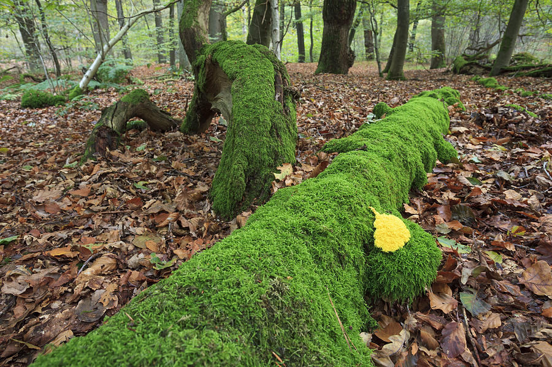
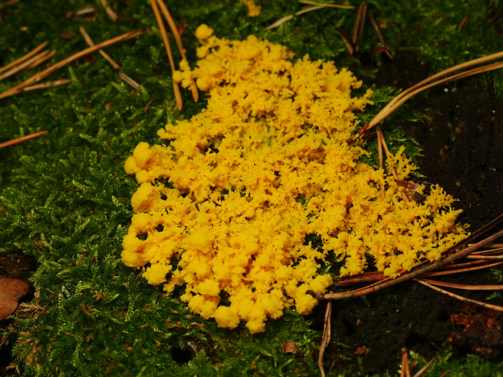
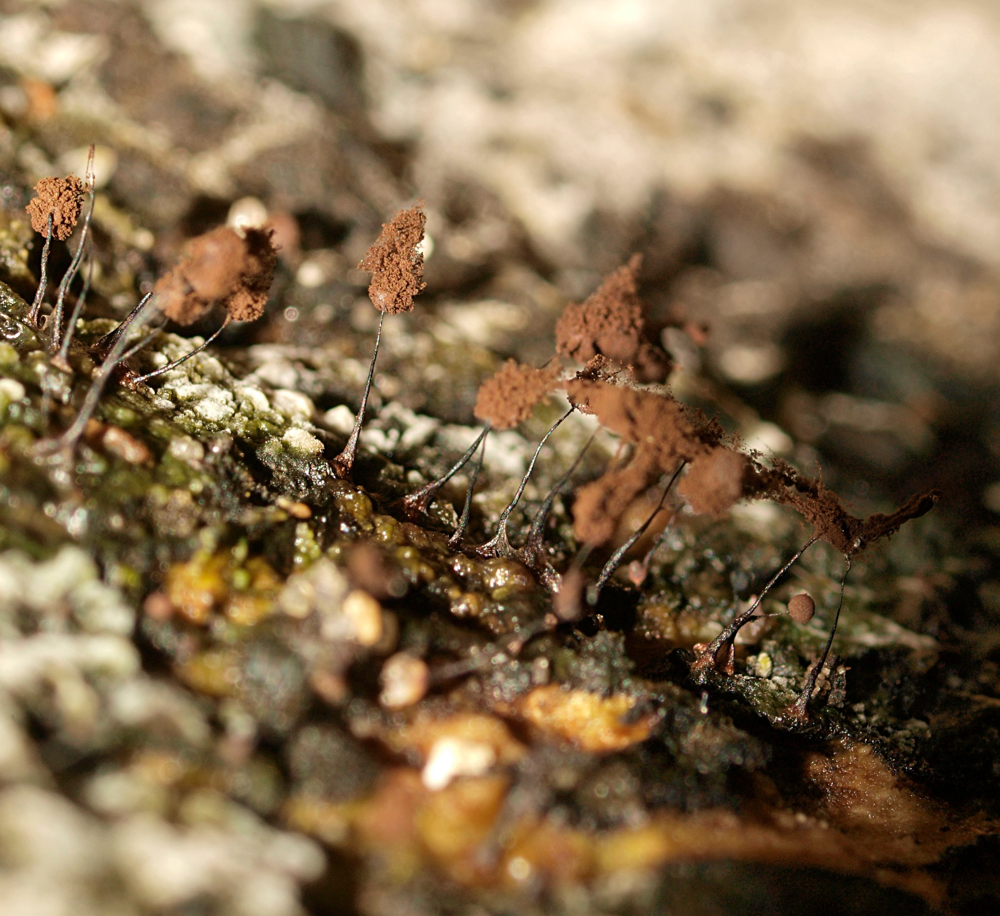
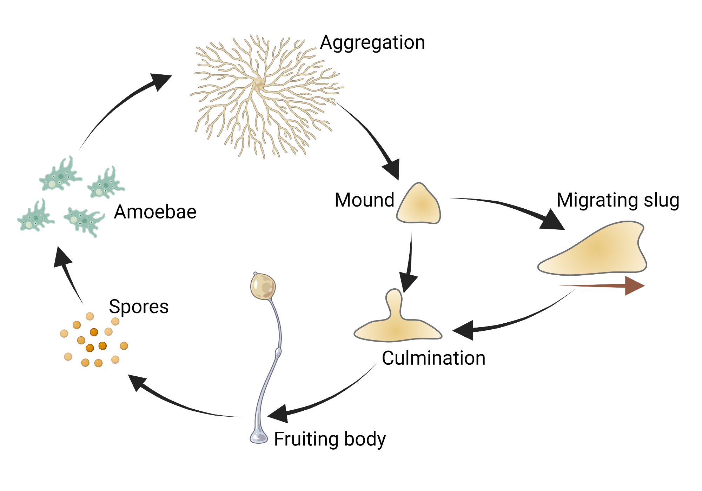
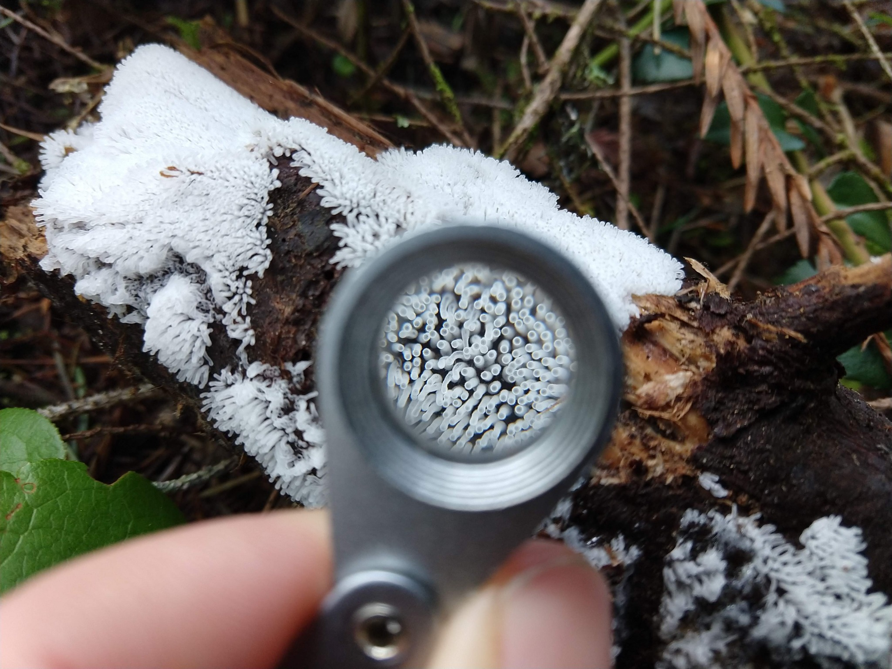
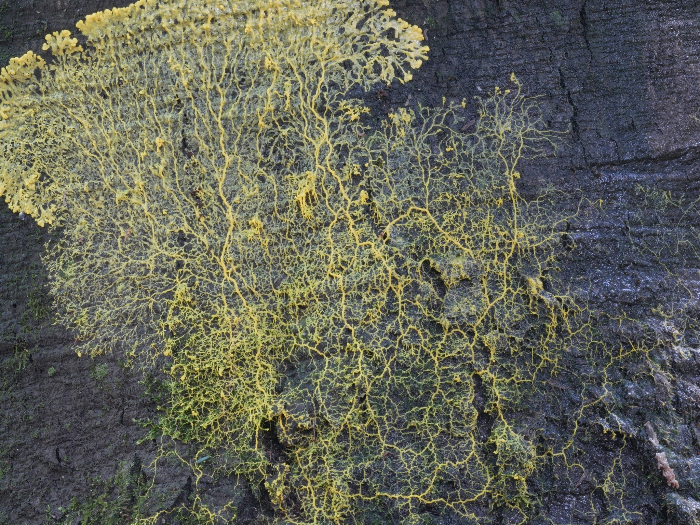
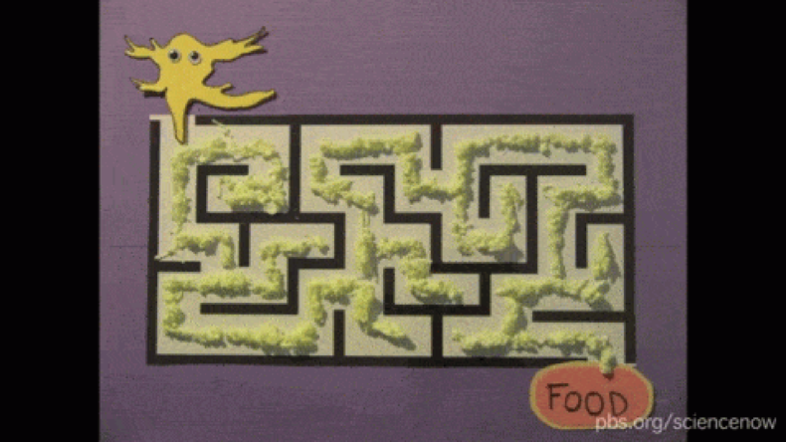
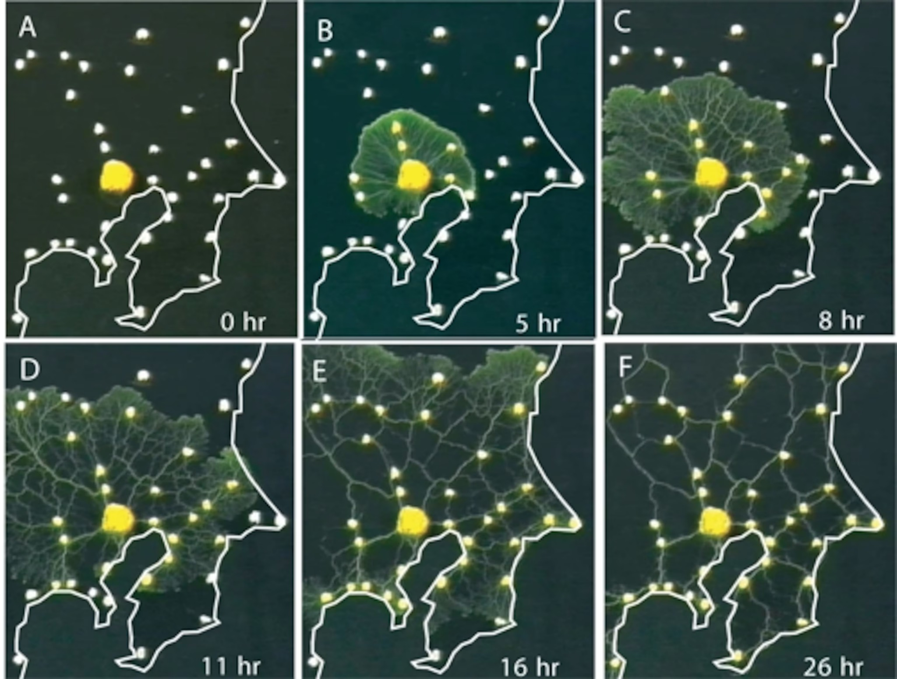
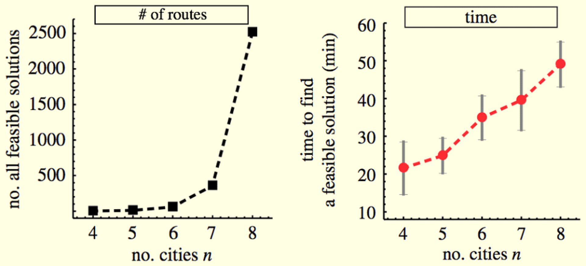
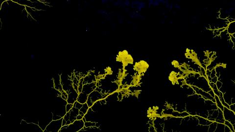

01
Why slime moulds matter
Human society is constantly trying to solve problems of how to move people, resources, energy, and information more efficiently. Scientists have realized that a single-celled, brainless slime mould may be able to solve some of those problems better than we can. That idea is fascinating not just because it is weird, but because it reflects one of environmental science’s biggest lessons: effective systems do not work in isolation. They work through relationships, feedback, and interdependence.
If you have ever walked through a forest, you may have seen yellow web-like growth spreading across dead logs or leaf litter. Moving slowly, slime moulds feed on the microorganisms living on decaying material. That makes them more than strange blobs on the forest floor. They are part of the hidden ecosystem processes that keep nutrients moving through food webs and help dead organic matter re-enter the living system.
At first glance, slime moulds seem primitive. But their behavior is another story entirely. As they move in search of food, they respond to trade-offs involving risk, hunger, food quality, moisture, and obstacles in the environment. That makes them a great example of a core ecology idea: organisms are shaped by both biotic and abiotic factors, and survival depends on responding to changing conditions within a habitat.
They have even shown learning, memory, and problem-solving behaviors that scientists compare to a primitive form of intelligence. Researchers now study slime moulds to solve real-world optimization problems like shortest paths and transport networks. In other words, this is also a story about how environmental systems can inspire human design.

02
What even is a slime mould?
Slime moulds are hard to classify because they share traits with animals, plants, and fungi, yet do not fully belong to any of those groups. Like social animals, they show coordination, communication, and collective behavior. Like plants, their spores contain cellulose. Like fungi, they are heterotrophs and reproduce using spores. But they also differ from each of those groups in important ways, which is why they are placed among the protists.
Slime moulds challenge the neat categories people often expect in nature, and environmental science repeatedly asks us to think beyond simple boxes. The natural world is messier, more connected, and more surprising than our labels suggest.


03
Cellular slime moulds
There are more than 800 species of slime moulds, and one major type is the cellular slime mould. When food is abundant, these organisms live as separate single cells. But when food becomes scarce, they aggregate into one moving mass. That makes them a vivid example of how limiting factors shape behavior. A change in resource availability changes the entire way the organism lives.
Aggregation begins when one stressed cell releases cyclic AMP, drawing nearby cells inward until many individuals form a single slug-like body. The slug then moves toward favorable conditions such as light, heat, and humidity, searching for a place to settle and reproduce. This is a strong ecology connection because it turns abstract ideas like range of tolerance and organism–environment interaction into something visible. Slime moulds do not just live in a habitat; they constantly read it.
What makes this even stranger is that not all cells benefit equally. Some become spores and reproduce, while others become stalk cells and die. Scientists have long been fascinated by how this self-sacrificing behavior persists. This is a subtle environmental ethics moment: even a tiny, unfamiliar organism can raise big questions about cooperation, value, and what it means for life to function as part of something larger than itself.


04
Plasmodial slime moulds
The other major type is the plasmodial slime mould, sometimes called a true slime mould. Unlike the tiny cellular forms, a plasmodial slime mould can grow surprisingly large, even though it is still just one giant cell with many nuclei. As it moves over damp, decaying wood and leaves, it feeds mainly on bacteria associated with decomposition.
Slime moulds belong to the detritus side of ecosystems, where decomposition, nutrient cycling, and energy flow quietly keep the system running. They help show that ecosystem health depends not only on visible plants and animals, but also on overlooked organisms doing hidden work on the forest floor.
As plasmodial slime moulds search for food, they send tendrils outward in all directions. When they encounter an attractant, cytoplasmic streaming strengthens that route; when they encounter a repellent or poor conditions, the tendril retracts. Step by step, the organism reshapes itself into a more efficient pathway. It is almost like watching ecosystem thinking in motion: one living system responding to resources, barriers, and trade-offs across an entire landscape rather than at a single point.
This also makes slime moulds a useful reminder that biodiversity is not just about charismatic animals. Forest ecosystems depend on hidden diversity too, including organisms like slime moulds.

05
Intelligence without a brain
Watching this optimization process, scientists realized slime moulds could solve surprisingly complex problems without a brain. When Physarum polycephalum was first brought into the lab, researchers mainly wanted to study movement. But that changed when Japanese scientists tested it in a maze.
They placed food at two ends of a maze. First, the slime mould spread broadly through the available space. Then it gradually withdrew from dead ends and retained the shortest working path between the food sources. That experiment matters not only because it is impressive, but because it mirrors a major course theme: simple organisms can reveal large environmental principles about adaptation, feedback, and system-wide efficiency.
Scientists later discovered that slime mould also avoids the slime trail it leaves behind, giving it a kind of externalized memory. That detail shows intelligence emerging through interaction with the environment itself. The organism is not solving the problem from above. It is learning through contact with the world around it.

06
Tokyo rail system
One of the most famous slime mould studies asked whether it could recreate a real transport network: the Tokyo rail system. Researchers placed food at city locations around a map of the Tokyo region and allowed the slime mould to grow outward from central Tokyo. At first, it spread widely, but over time, it cut the network down to the most efficient set of transport links. The result looked strikingly similar to the real rail system.
Slime mould gives a visual model for the difference between sprawling exploration and efficient long-term design. It tests many routes at first, but it does not keep every route forever. It strengthens the useful connections and drops the wasteful ones. That makes it a powerful way to talk about transportation planning, energy use, pollution reduction, and why connected systems often work better than scattered, duplicated growth.
It also connects naturally to sustainability. Slime mould does not provide a complete moral blueprint for human society, but it does model an “adaptation under limiting conditions and efficient use of resources” principle that we care about deeply. Its behavior suggests that efficient systems can be robust without being excessive, which is exactly the kind of thinking behind sustainable infrastructure and smarter regional planning.

07
Travelling salesman problem
Slime mould’s abilities are not limited to one maze or one rail map. Scientists have also used it to think about the travelling salesman problem, where the challenge is to find the shortest possible route that visits every city once and returns home. This is a problem that's surprisingly difficult to solve, and for every city, or every node, that gets added, it gets exponentially more complicated. When there are just four cities, there are three possible solutions. When there are eight cities, there are 2,520 possible solutions. Thus, it takes traditional computers exponentially more time to solve as they go through each solution one by one. But researchers discovered that slime mold can solve the problem in linear time, no matter how many cities get added, because it can process information concurrently. Problems like this matter in the real world for delivery routes, school buses, logistics, and infrastructure planning.
Environmental problems are rarely just biological. They involve economics, land use, technology, and human decision-making too. Slime mould becomes interesting not only because it is alive, but because studying it connects ecology to design, engineering, and the practical challenge of organizing human systems with less waste.
Because working with living slime mould directly can be slow, scientists now build algorithms inspired by its behavior.


08
The end
Scientists are even exploring slime mould as a physical computing medium. In one study, researchers built a slime mould chip using a network of conductive-coated slime mould tubes that could respond to optimization tasks. What started as a forest-floor organism feeding on decay has become a source of inspiration for computing, network design, and applied mathematics.
Slime moulds matter not just because they are bizarre or clever, but because they change the way we think about intelligence, ecosystems, and value. They remind us that environmental science is not only about protecting large, obvious parts of nature. It is also about noticing the hidden organisms and relationships that keep systems functioning and, sometimes, quietly outperform our own inventions.